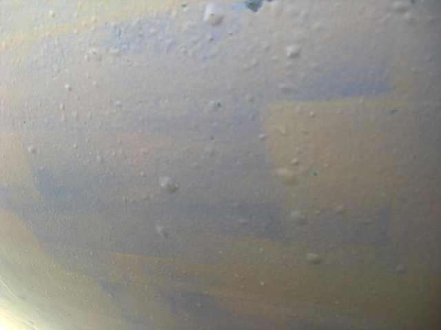
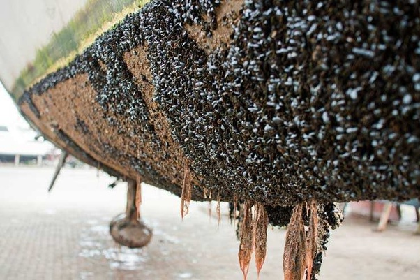
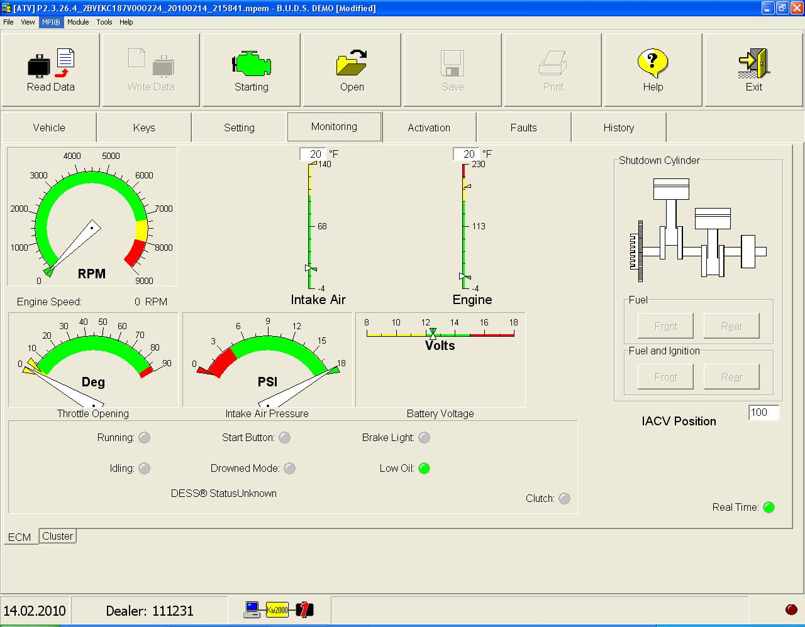

Цены
Описание услуг
Ремонт изделий из стеклопластика и корпусов лодок
Восстановление несущей структуры корпусов лодок из полиэфирного стеклопластика длиной до 5 м, других изделий из стеклопластика.
Восстановление покрытия гелькоутом стандартных цветовых тонов (белый, черный, зеленый, желтый, красный, синий) с помощью распылителя гелькоута с последующей шлифовкой и полировкой. Возможно смешивание отдельных цветовых тонов в количестве от 20 кг.
Восстановление покрытия полиуретановой аэрозольной краской.
Полировка покрытия гелькоута.
Восстановление поверхностей, пострадавших от осмоса, включая ремонт слоев стекловолокна, подвергшихся воздействию осмоса.

Нанесение нерастущей краски, применяется к плавучим судам, находящимся в водоеме в течение всего сезона.


BRP Sea doo, Ski doo, ATV Диагностика и ремонт
Компьютерная диагностика с помощью сканера BRP. С помощью сканера можно считывать ошибки, накопленные в электронном блоке управления двигателем, сбрасывать ошибки, считывать показания датчиков при работе двигателя, настраивать необходимые исполнительные механизмы, программировать электронный блок управления. Запись нового ключа dess. Аннулирование моточасов после капремонта двигателя.

Диагностика двигателя с помощью автомобильного осциллографа (мотортестер)
Индивидуальное тестирование датчиков и исполнительных механизмов двигателя.
Скрипт CSS для проверки работы двигателя. Позволяет оценивать и сравнивать производительность каждого цилиндра во всем диапазоне нагрузок и скоростей. Этот тест используется для выявления причин неисправности двигателя. Подготовка топливной смеси для динамического сжатия в каждом цилиндре оценивается индивидуально.

Техобслуживание двигателя.
Замена масла, фильтров.
Замена приводна ГРМ.

Диагностика и ремонт электросистем
Оценка силовой электросистемы (аккумулятор, стартер, генератор).
Диагностика проводится с помощью автомобильного осциллографа (мотортестера), скрипт ElPower.
Техническое состояние аккумуляторной батареи, стартера и генератора оценивается быстро и эффективно, без снятия компонентов.

Обследование и ремонт различных электрических систем.

Диагностика и ремонт трансмиссии и ходовой части
Замена импеллера водометной системы Sea doo.
Ремонт подвески снегоходов Ski doo, ATV квадроциклов.
Диагностика и ремонт тормозной системы ATV квадроциклов.